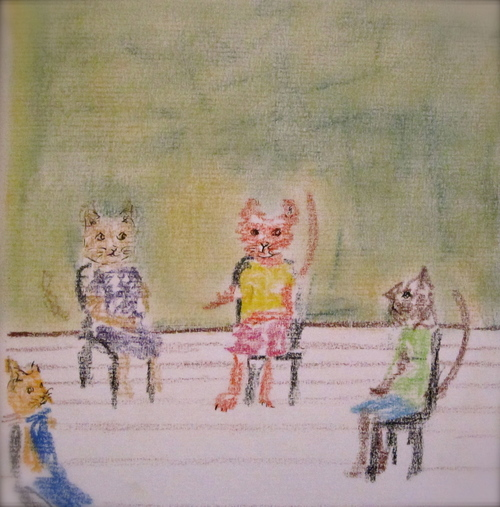

Art Therapy is a unique form of psychotherapy that uses the art process to assist clients in expressing thoughts, feelings, and memories. It can function as an auxiliary process, sometimes called “Art as Therapy,” wherein people find relief and healing from the art process itself, and also engage in verbal discussion aided by the soothing properties of art-making; or it can also function as a primary process, with thoughts and feelings being expressed directly through the art that is made, and may not be remarked upon verbally at that time.
The creative process uses areas of the brain that are typically associated with sensory memory, experience of emotion and imaginative play, making Art Therapy ideal for some populations that may not be as responsive to verbally oriented therapies such as: children, persons with developmental problems or disabilities, trauma survivors, introverted persons or those who experience high levels of anxiety, traumatic brain injuries, and individuals with substance use problems.
It is also helpful for families, or individuals who have difficulty accessing unconscious material and wish to develop greater capacity for insight.
For more information about art therapy, please visit the American Art Therapy Association website.
Most people seek therapy because they are experiencing some sort of pain
or discomfort in their lives and want to
find relief. For some there may be experiences
from their past that hinder the ability
to find fulfillment in work or relationships,
for others recent events have disrupted
their lives in ways that feel new or foreign,
and still others are unsure of the cause
but are blocked from the satisfaction they
desire. Regardless of the reasons for seeking
therapy, one of my fundamental goals as
a clinician is to help patients find relief
and meaning in their lives. Depending on
the individual problems and challenges
presented therapy may be short term or
longer term, but my approach to treatment
goes beyond just "talking things through"
and focuses on developing the insight and
skills to make meaningful change.
I work with adolescents, emerging adults,
and adults; individuals, couples, and families.
Virtually everyone experiences some sort of trauma during the lifespan, and humans are very resilient in the face of stress. There are also some types of events that are so threatening, scary, sudden or confusing that it changes one's perspective on themselves, others, and the world. This is called "trauma response" or "post traumatic stress."
In trauma-focused therapy, focus is split between decreasing unwanted "symptoms" and developing a cohesive understanding of what happened and how it affected you. The length and style of treatment depends on the type of trauma.
Some theorists have said that grief is the universal trauma; death is a part of life. Support through the loss of a significant person is critically important, especially for children and when coping with shocking, unexpected, or violent death. My approach validates grief as an ongoing process, while emphasizing the importantance of finding the means to move forward.
On a personal and professional level I am committed to providing affirming treatment to the LGBTQIA community, and maintaining a flexible and respectful approach to various expressions of sexuality. This includes but is not limited to binary and non-binary gender identity and sexual orientation, coming out, transition, asexuality, polyamory and/or non-monagamy, power play, and intersections of sexuality and trauma. I work with both individuals and couples.
This topic is one of the most common reasons that individuals and couples seek therapy. Whether you have difficulty connecting or maintaining connection, struggle with intimacy, experience relationship patterns that seem to keep repeating, or strive for better communication, therapy can be a great tool to understand and resolve these challenges.
Mikella is the developer and supervisor of the Art Therapy Internship Program at Sanctuary for Families , and supervises graduate level interns from New York University. She is also a co-supervisor at Camp Good Grief, a therapeutic bereavement camp organized by East End Hospice.
Mikella believes that the foundation for excellence in clinical practice begins with effective, skilled, and nurturing supervision. For the beginning professional, supervision offers the guidance and support to apply skills and knowledge, and develop one's individual style. For the more seasoned practitioner, it is the process of continuing one's growth after the formal education process has ended, and ensuring that objective feedback can be integrated into current work. In addition to working with students, Mikella is available for clinical supervision in private practice for Creative Arts Therapists and other mental Health professionals.
Mikella Millen offers professional development trainings tailored to meet your specific program needs; presentations are carefully crafted to include relevant legal and ethical issues, cultural competency, and follow-up “supervision” meetings to help ensure that education is incorporated into daily practice.
Mikella has provided professional level trainings with the Clinic Technical Assistance Center, New York University graduate programs of Art Therapy and Social Work, and individual agencies throughout the New York metro area.
Trainings are available in the following areas:
Trainings range from 3 hour introductory workshops to multi-day intensives, incorporating didactic presentations, experientials and role-plays, and group discussion. All components of the training will be customized to meet the specific needs of your agency and staff. Please email for more information.
Mikella Millen, MA, ATR-BC, LCAT is a licensed Art Therapist, Clinical Supervisor, and graduate educator in New York City. She has a passion for helping individuals and families to recognize and cultivate their innate strengths, and to promote wellness through mindfulness, insight and creative process. After graduating from New York University she worked in a variety of community-based, outpatient, acute care, and residential settings allowing her to develop expertise with diverse populations. Her focus is in providing culturally competent, LGBTQIA affirming, and trauma-informed treatment for adolescents, adults, couples and families.
Mikella is a consultant and supervisor with Sanctuary for Families, and the lead supervisor and coordinator for the Art Therapy internship program at Camp Good Grief. She also travels internationally, volunteering in social services programs and supervising young professionals doing service work abroad.
Mikella is a graduate level guest lecturer with New York University's Art Therapy program and Silver School of Social Work, and has presented professionally for numerous organizations in New York City including the McSilver Institute for Poverty, Policy & Research, Coalition for Hispanic Family Services, and the NYC Mayor's Office to Combat Domestic Violence. She has obtained additional training in Couples Therapy at the Institute for Contemporary Psychotherapy and Professional Coaching through NYU’s School of Professional Studies.
Please feel free to send me a message regarding appointments via the contact form. I can also be reached at +1-917-756-5540
I am located at 412 6th Ave #513 NY, NY just off of the West 4th St stop, serviced by the A, B, C, D, E, F and M trains.